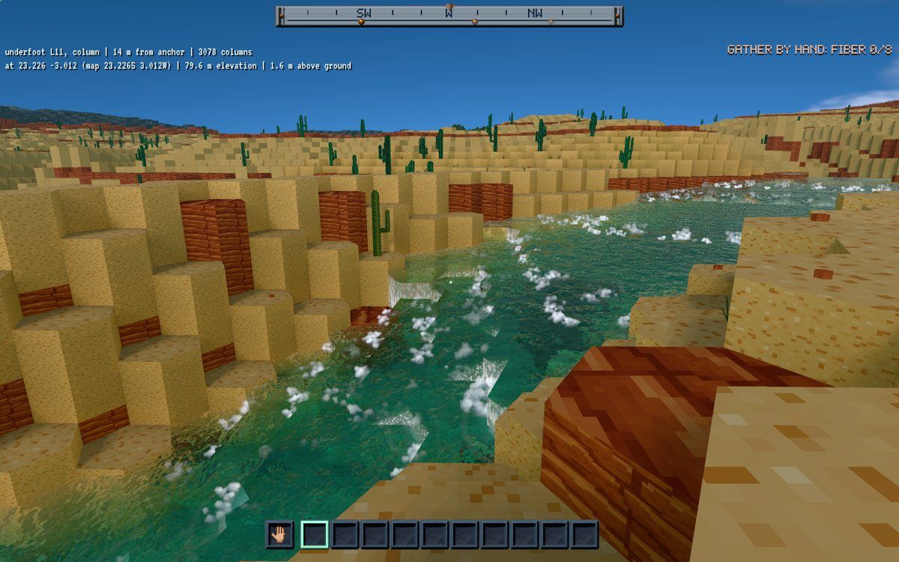

<title>Desert Cascade Frame</title>
<meta name="claude:viewport-fit-sides" content="cover">
<link rel="stylesheet" href="https://fonts.googleapis.com/css2?family=IBM+Plex+Sans:wght@400;600&family=IBM+Plex+Mono:wght@400;500&family=Space+Grotesk:wght@500;700&display=swap">
<style>
/* Layout: one reading column; findings, cuts, the owner's choices, limits, raw stands. */
:root {
  --bg: #f6f4ef; --panel: #ece7dc; --fg: #22201b; --muted: #6b6457; --line: #d6cfc0;
  --accent: #1f7a73; --warn: #a3501b; --good: #2f6d36;
  --display: "Space Grotesk", system-ui, sans-serif;
  --body: "IBM Plex Sans", system-ui, sans-serif;
  --mono: "IBM Plex Mono", ui-monospace, Menlo, monospace;
}
@media (prefers-color-scheme: dark) { :root:not([data-theme="light"]) {
  --bg: #16191a; --panel: #1f2425; --fg: #e8e4da; --muted: #a39d90; --line: #33393a;
  --accent: #5cc2b8; --warn: #e3935b; --good: #7cc485; color-scheme: dark } }
:root[data-theme="dark"] {
  --bg: #16191a; --panel: #1f2425; --fg: #e8e4da; --muted: #a39d90; --line: #33393a;
  --accent: #5cc2b8; --warn: #e3935b; --good: #7cc485; color-scheme: dark }
body { background: var(--bg); color: var(--fg); font: 15px/1.6 var(--body); }
main { max-width: 820px; margin: 0 auto; padding-block: 28px 64px;
  padding-left: max(16px, env(safe-area-inset-left, 0px)); padding-right: max(16px, env(safe-area-inset-right, 0px));
  display: grid; gap: 28px; }
a { color: var(--accent); }
.top { display: flex; flex-wrap: wrap; gap: 8px 16px; justify-content: space-between; font-size: 13px; color: var(--muted); }
h1 { font: 700 clamp(26px, 5vw, 36px)/1.15 var(--display); margin: 0; text-wrap: balance; }
h2 { font: 600 20px/1.25 var(--display); margin: 0 0 10px; text-wrap: balance; }
p, li { max-width: 68ch; }
section { min-width: 0; }
.lede { color: var(--muted); margin: 8px 0 0; }
figure { margin: 0; }
figure img { width: 100%; border-radius: 6px; display: block; }
figcaption { font-size: 13px; color: var(--muted); margin-top: 6px; }
.stats { display: grid; grid-template-columns: repeat(auto-fit, minmax(170px, 1fr)); gap: 12px; }
.stat { background: var(--panel); border-radius: 6px; padding: 12px 14px; }
.stat b { display: block; font: 600 22px/1.2 var(--mono); font-variant-numeric: tabular-nums; }
.stat span { font-size: 13px; color: var(--muted); }
ol, ul { padding-left: 20px; margin: 0; display: grid; gap: 8px; }
code { font: 13px var(--mono); background: var(--panel); padding: 1px 4px; border-radius: 3px; }
.wrap { overflow-x: auto; }
table { border-collapse: collapse; width: 100%; font-size: 14px; }
th, td { text-align: left; padding: 7px 10px; border-bottom: 1px solid var(--line); vertical-align: top; }
td.n, th.n { text-align: right; font: 13px var(--mono); font-variant-numeric: tabular-nums; white-space: nowrap; }
th { font-size: 12px; text-transform: uppercase; letter-spacing: .05em; color: var(--muted); }
.pill { display: inline-block; font-size: 12px; padding: 1px 8px; border-radius: 99px; border: 1px solid currentColor; }
.pill.good { color: var(--good); } .pill.warn { color: var(--warn); }
.note { border-left: 3px solid var(--warn); padding: 4px 0 4px 12px; }
</style>
<main>
  <div class="top"><a href="https://claude.ai/artifact/VyvoqUcJ869F7Hi6C5dxuA">All Pale Blue Dot mockups (the tracker)</a><span>2026-11-17 · M4 Max · release · <code>cascade-perf</code></span></div>
  <header>
    <h1>Frame drops at the desert cascade</h1>
    <p class="lede">The owner: "im getting serious frame drops near these areas", at map 23.2255S 3.012W, 79.6 m: a wide river stepping down one layer at a time, mist at every lip.</p>
  </header>
  <figure><figcaption>The held view on a fresh world: <code>--at 23.2255 -3.012 --yaw 0 --pitch -10</code>.</figcaption></figure>

  <section>
    <h2>Where the frame goes</h2>
    <div class="stats">
      <div class="stat"><b>GPU</b><span>bounds the frame: render thread waits on Metal for a command buffer in 39 % of samples</span></div>
      <div class="stat"><b>4.4–6 ms</b><span>main world at p50, same at the cascade and facing away</span></div>
      <div class="stat"><b>0.07–0.1 ms</b><span>splash on the CPU: 131 feet, ~1,230 quads</span></div>
      <div class="stat"><b>8–11 ms</b><span>render-thread spike per fine-set upload (landing, edit, water tick)</span></div>
    </div>
    <ol style="margin-top:14px">
      <li><b>Standing, the water sim costs nothing.</b> The river is settled: no water tick in 40 s. The mesh (1,720 cells, 4,478 triangles) is made once in 1.3–1.5 ms.</li>
      <li><b>The water's fragment ran for every face of the cascade</b>, front and back, behind the canyon walls too. It can discard, so the GPU could not reject a hidden fragment by depth before running all of its waves.</li>
      <li><b>Walking along the river, the spikes are fine-set uploads</b>: records 3–4.5 ms, light 2.2–3.3 ms, materials 2.8–3.3 ms, all on the render thread. <b>7 of 12 water ticks after digging by the bank changed nothing and still made one</b>, plus a 1.5–2 ms remesh.</li>
    </ol>
  </section>

  <section>
    <h2>What changed: the same picture</h2>
    <div class="wrap"><table>
      <thead><tr><th>Cut</th><th>Check</th></tr></thead>
      <tbody>
        <tr><td>The water's discards run first, before its waves</td><td><span class="pill good">identical</span> 0 of 5,184,000 pixels differ, two views</td></tr>
        <tr><td>Depth pre-pass for the flowing water; the shading runs once a pixel, for the nearest face</td><td><span class="pill good">identical</span> same captures; no late pipeline</td></tr>
        <tr><td>A water tick that moves nothing keeps its version: no upload, no remesh</td><td><span class="pill good">measured</span> 7 empty ticks, 0 uploads; water meshes 20 → 13</td></tr>
      </tbody>
    </table></div>
    <p>Dropped: skipping the still waves where the flow's copies replace them. It changed up to 200,000 pixels by 1–141 levels, so it is not the same picture.</p>
  </section>

  <section>
    <h2>The mist rule on its own branch</h2>
    <p><code>claude/fall-size-rules</code> (the owner's request, a look change) at the same view: quads 1,230 → 113 (−91 %), splash CPU 66–69 µs → 25–31 µs a frame.</p>
  </section>

  <section>
    <h2>For the owner (would change the look)</h2>
    <ul>
      <li>The splash reach is 140 m: every foot of the cascade in view splashes. A shorter reach for small falls would cut overdraw.</li>
      <li>The flowing water's back faces are drawn for the underwater view; culling them above water would change what a swimmer at the surface sees.</li>
    </ul>
  </section>

  <section>
    <h2>Next, same picture</h2>
    <p>Work out the fine-set's light and materials where the set is built, not on the render thread, then upload only the columns an edit or tick changed. Every landing in the game pays this today.</p>
  </section>

  <section class="note">
    <h2>Limits</h2>
    <p>No valid wall-clock A/B: the screen was locked for the whole sitting (macOS paces a window it cannot show; acquire 7–37 ms) and other sessions ran up to three more game windows and builds on the same machine. The perf suite refuses both. Metal gives no per-pass GPU time. Owed on an unlocked, quiet machine: <code>perf_suite.py --scenarios cascade,cascade-walk,walk</code>, main against the branch.</p>
  </section>

  <section>
    <h2>Interleaved stands (paced by the lock; not a result)</h2>
    <div class="wrap"><table>
      <thead><tr><th>Run</th><th class="n">wall p50</th><th class="n">p95</th><th class="n">p99</th><th class="n">main p50</th><th class="n">render p50</th><th class="n">acquire p50</th></tr></thead>
      <tbody>
        <tr><td>before, round 1</td><td class="n">19.7</td><td class="n">93.7</td><td class="n">131.0</td><td class="n">8.8</td><td class="n">16.3</td><td class="n">6.8</td></tr>
        <tr><td>after, round 1</td><td class="n">18.7</td><td class="n">79.2</td><td class="n">116.2</td><td class="n">5.6</td><td class="n">16.4</td><td class="n">11.5</td></tr>
        <tr><td>before, round 2</td><td class="n">39.8</td><td class="n">81.4</td><td class="n">108.5</td><td class="n">10.1</td><td class="n">37.5</td><td class="n">28.1</td></tr>
        <tr><td>after, round 2</td><td class="n">39.2</td><td class="n">87.1</td><td class="n">113.5</td><td class="n">9.4</td><td class="n">35.9</td><td class="n">23.6</td></tr>
        <tr><td>before, round 3</td><td class="n">37.3</td><td class="n">52.6</td><td class="n">71.8</td><td class="n">5.2</td><td class="n">36.7</td><td class="n">33.1</td></tr>
        <tr><td>after, round 3</td><td class="n">36.4</td><td class="n">48.4</td><td class="n">60.4</td><td class="n">4.9</td><td class="n">36.4</td><td class="n">32.7</td></tr>
      </tbody>
    </table></div>
    <p style="font-size:13px;color:var(--muted)">ms. M4 Max, release, windowed, <code>--no-vsync</code>, <code>--stand 40</code>, last 28 s of each run. Report: <code>docs/benchmarks/2026-11-17-cascade-perf/report.md</code>.</p>
  </section>
</main>
